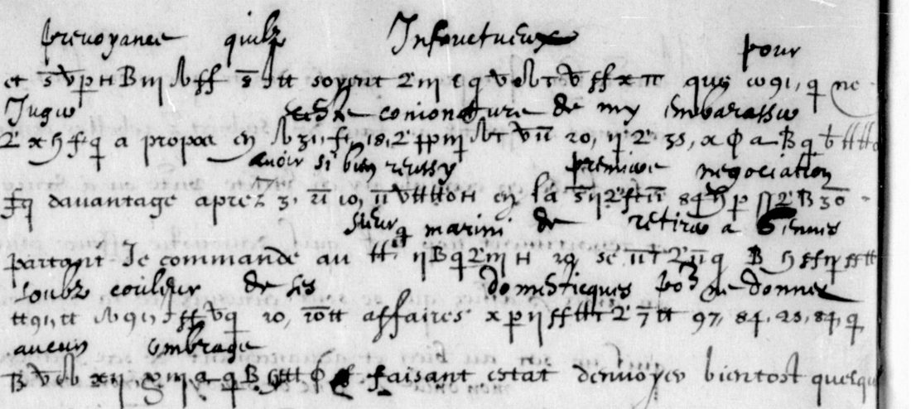

At a glanceExisting decipherment · Satoshi Tomokiyo, 2021
- The letters
- Louis XIII, countersigned by Brûlart de Sillery, to Léon Brûlart, his ambassador in Venice: one of 15 September 1615 (probably from Poitiers) and one of 25 July 1617 (Paris). French, with passages in cipher.
- Where
- Bibliothèque nationale de France, fr. 18043 f. 83–84 and fr. 18044 f. 109–110. DECODE R2785 and R2786, both “partially decrypted”.
- The cipher
- Letter-like signs with two or three forms for most letters; numbers with a stroke for words and syllables; dotted vowels for the dukes of Savoy and Mantua; signs to cancel or repeat.
- How it was deciphered
- Satoshi Tomokiyo reconstructed the key and read both letters with it in 2021. The 1615 letter also has a decipherment written above most cipher runs. Nothing was deciphered again here.
- Still open
- A few symbols Tomokiyo could not read; he thinks they are nulls or cancelled signs.
- Credit
- Satoshi Tomokiyo (key and reading); the contemporary interlinear decipherment.
Until 14 October 2026 these letters shared an entry with Louis XIII’s letter of 1631 to Melchior de Sabran in Genoa, because DECODE lists all three under the King’s name. That letter is in a different cipher, solved by George Lasry, with its own page.
01 The letters
Léon Brûlart was French ambassador in Venice from 1611 to 1620. BnF fr. 18043 holds many letters of 1615–16 sent to him partly in cipher by Louis XIII, Marie de Médicis and Puysieux; fr. 18044 holds more of 1617–18. The royal letters are countersigned “Brulart”, by Brûlart de Sillery. DECODE has two of them:
- R2785, fr. 18043 f. 83–84, 15 September 1615. DECODE gives the place as “Poictyers[?]”. In the clear the King says he is still held in the town by the illness of his eldest sister (“ma soeur aysnee”), which fits the court at Poitiers in September 1615, on the way to the Spanish marriages.
- R2786, fr. 18044 f. 109–110, Paris, 25 July 1617.

02 The cipher
Tomokiyo’s key, “Brulart de Leon’s Cipher (1615–1618)”, is attached to both DECODE records and printed on Cryptiana. It has:
- an alphabet of letter-like signs, with two or three different signs for most letters;
- numbers with a small stroke (a virgule) for words: 2 amytie, 20 de, 35 en, 70 je, 97 pour …;
- numbers with a bar over them for syllables and short words: 5 pre, 7 que, 18 roi, 37 vous, 30 tion …;
- vowels with dots for princes: ö the Duke of Savoy, ä the Duke of Mantua;
- a sign that cancels what comes next and a sign that repeats.
Tomokiyo notes that the cipher is not much different from other French ciphers of the time, although Brûlart de Léon left a treatise on ciphers.
03 The decipherment
On the 1615 letter, someone, probably in the embassy, wrote the plain words above most of the cipher runs. The decipherment visible on the page names Marini, a withdrawal to Genoa (“retirer a Gennes”), his domestics, and avoiding any suspicion (“aucun ombrage”). Tomokiyo read both letters with his key and recorded on DECODE what he could not read: in 1615 “some passages”, which “may be partially or totally nulls”; in 1617 “some symbols”, at least some of them cancelled.
No transcription was made here and his key was not applied again; the reading is his.
04 What remains open
- The symbols Tomokiyo left unread, probably nulls or cancelled signs.
- Here: only one of the three images of each record was fetched, and no sign-by-sign check was made, so this page has no replay. The other letters to Brûlart de Léon in the two volumes were not opened.
05 Sources
- DECODE R2785 and R2786, uploaded by Satoshi Tomokiyo, August 2021, with his key and notes.
- Satoshi Tomokiyo, “French Ciphers during the Reign of Louis XIII”, Cryptiana, section “Brûlart de Léon”.
- BnF fr. 18043 and fr. 18044 on Gallica (linked from Tomokiyo’s page).
Notes: targets/brulart1615/ in the repository.